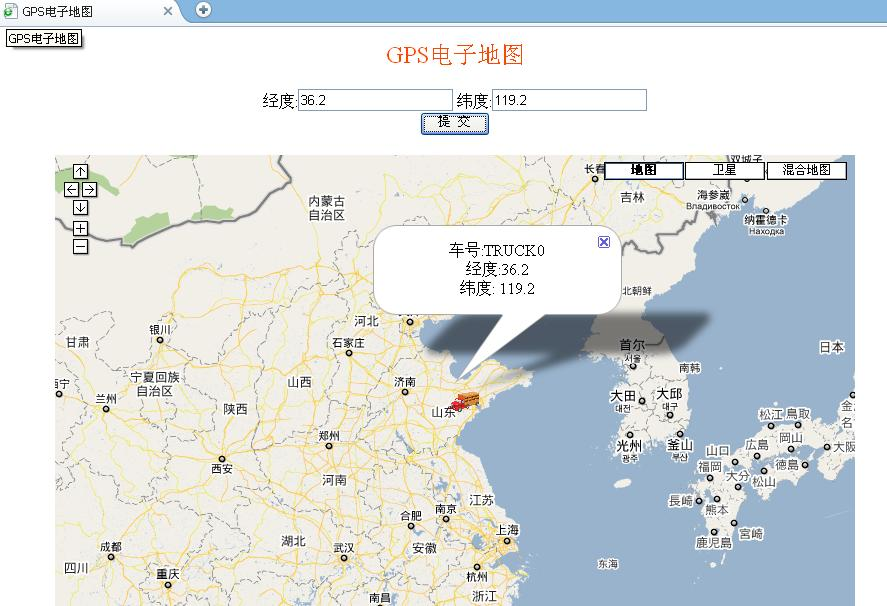

电子地图是车辆导航系统中显示车辆位置的一个重要手段，也是客户与监控中心获取车辆信息的最为直观的途径。结合GPS模块实时动态的获取车辆的地理位置（经度、纬度）信息后直观的显示在电子地图上。
该系统的地图功能，完全按照Google Maps API进行开发，方便进行扩展。Google 允许各种web masters 通过Google Maps API来增加或自定义他们站点特定的地图。
地图上的自定义地标即输入相应经纬度，单击会显示当前车辆所处的经纬度及相应车号。地图上原有调整显示比例、拖动、地图、卫星、地形等功能，完全兼容google的地图使用方法。GPS车辆实时监控系统界面如下图所示。
